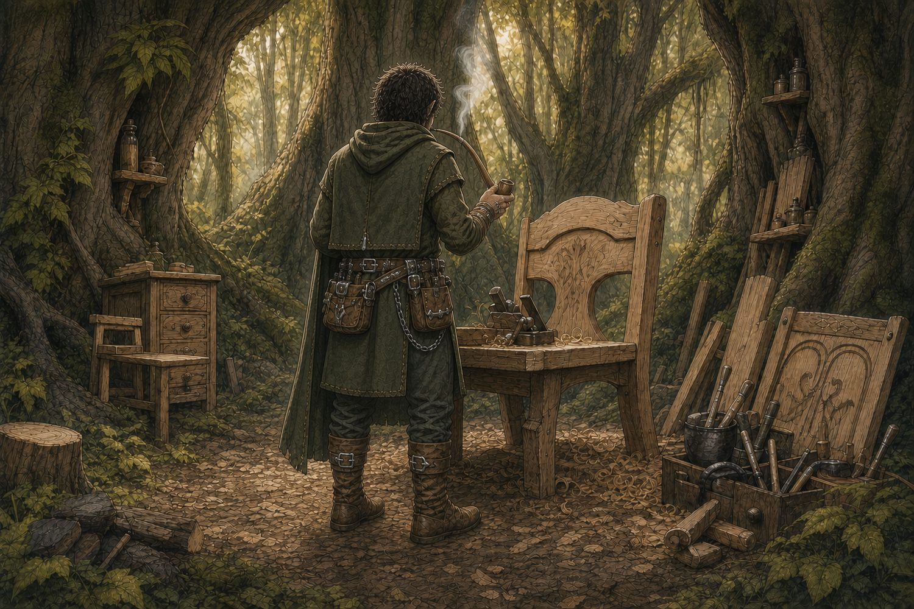

Property of Honest Tom’s Corporation
SteegLahg
of the Staglights
Book One — The Seagull Mark
Complete working edition · thirteen chapters
Chapter One
Band of the Staglights

The Rhelm was one land before the land got too full of itself and broke apart.
Back when the sea had not yet made up its mind where to go, the great joined world ran hot and wide. What Humanis people would later call Pangea was, to the Staglights, simply the Rhelm: the place beneath their feet, the place their trees had always stood, and the place every other fool believed belonged to him.
The Forest of the Staglights lay in the southern stretch of that old world. It was a crowded forest, but not in the Humanis way. Humanis could look at a forest and see empty space between every trunk. Staglights looked at it and saw porches, stairways, bedrooms, hiding places, food stores, boundaries, old grudges, and at least three shortcuts they had promised never to use again.
They lived in trees because trees were sensible. A proper tree already came with a roof, shade, a place to climb, and a view of who was coming to bother you. A bush house was lower to the ground and not nearly as respected, but a person could keep tools, root vegetables, dirty boots, and secrets in one. The Staglights made furniture for Humanis because Humanis could be convinced to pay for chairs, tables, and cabinets. The Staglights themselves considered this a strange arrangement. Why turn a beautiful tree into a chair when a person could sit on the tree?
Still, silly was profitable.
SteegLahg was born into a rented high tree at the east edge of the Staglight neighborhood, where the branches leaned over a mossy run and the roof leaked only when the rain came sideways. His mother, Katah, said it was a good tree because the morning sun found it first. His brothers, Tah and Tel, said it was a bad tree because the old ladder had a missing rung in a place that hurt if you forgot about it. Steegs thought both things could be true.
Tah and Tel were older by enough years to believe they knew everything and younger by enough sense to prove they did not. They were excellent at getting each other mad, poor at being caught, and always somehow nearby when something was broken. If a food basket went missing, they had seen nothing. If a neighbor’s roof had a new hole in it, they had only been practicing pinky strength. If Katah asked who had tracked mud across the sleeping mat, both brothers looked toward Steegs with the honest faces of men who had rehearsed it.
They had once kept fighting mossfins in separate little rain bowls. Steegs had one called Rocky. Tel had one called Apollo. The mossfins were supposed to stay apart because they were mean little things with bright fins and no better sense than to fight until one of them stopped moving. That warning sounded, to Tah and Tel, like a challenge.
They found a large clear bowl from a Humanis trade basket and agreed to put Rocky and Apollo together. At first the fish swam around one another like gentlemen. Tah even tried to make a wager out of it. But after a day at tree learning, Steegs climbed back to the shared branch room and found Rocky floating near the top, one eye gouged out. Apollo swam below him like he had won a trophy.
Steegs complained until Katah told him some things in life were unfair. Tel said Apollo had simply gotten the upper. Tah said that meant he had won the wager, though nobody remembered agreeing to one.
Later, when nobody was looking, Steegs added a touch of green pine-cleaning wash to Apollo’s bowl. The water turned bright green. Apollo darted up and down in a dance of death that impressed nobody except Steegs. Tel cried foul. Katah looked at the ruined bowl, then at Steegs, and said, “Now, Tel. Anything could have happened.”
Steegs leaned toward his brother. “Yeah,” he said. “Anything.”
Tel ran off mad as hell, shouting that Steegs had killed Apollo.
He had.
Steegs called it Rocky’s Revenge.
Steegs was smaller then, but he was not quiet. He had one healthy black tooth in the back, the rest of his teeth were nice, and he was a handsome young Staglight with hands that wanted to touch every tool, and a habit of asking questions after people had already decided they did not want to answer them. He wanted to know why their father had no place at the family table. He wanted to know why Katah became busy whenever the question appeared. He wanted to know why no one ever told Tah and Tel to stop smirking when he asked it.
Nobody had a useful answer.
There had once been another place near the table. It was not empty exactly. Katah kept a little braided cord there, tucked beneath the edge of a shelf. Sometimes she moved it while cleaning. Sometimes Steegs saw it in her hand when she thought nobody was watching. He knew it belonged to Citra, his Irish twin, though he barely remembered her face. In his memory she was only a sleeve beside him, a laugh on the other side of a tree trunk, and a small hand pulling his hand away from a spider nest. He did not ask where she was. He had learned that certain questions made the whole house go still.
The person who never let a house go still was Shoshi.
Shoshi was young for a block-party leader, which was one of the reasons she liked being one. She had a neat scarf, a polished set of boots, and the kind of voice that could make a regular request sound like a citation. She called herself the Harvest Coordinator, though everyone knew she was the girl who told people where to put their acorn baskets. Her family held one of the valuable trees in the neighborhood: a broad old oak with a straight trunk and a branch system so well arranged it looked as if the tree had hired an architect.
Shoshi believed this made her important.
Katah believed it made Shoshi lucky.
Tah and Tel believed it made her a target.
Steegs did not yet have a settled opinion, but he did not like the way Shoshi spoke to his mother.
The yearly acorn harvest began with songs, baskets, arguments about ladders, and more food than anyone could reasonably hold while standing in a tree. It was also one of the few days every Staglight family had to appear in the same place and pretend they had no ongoing disputes. Favors were discussed. Debts were remembered. Children were corrected by adults who had no business correcting anybody’s children. The rich Staglights watched the poor ones closely, just in case somebody looked too comfortable.
Shoshi found Katah before the sun had cleared the eastern ridge.
She looked past the family toward the old oak, its branches heavy with acorns. “My family’s tree held through the flood,” she said. “Not one of the big limbs came down.”
Then she turned and pointed to a younger oak growing a little apart from it. Its branches had been bent and tied into neat, measured angles, more orderly than any tree had a right to be.
“My father planted that one for me,” Shoshi said. “It has blossomed nicely, as you can see. I have trained the branches myself. A sophisticated shape. It will withstand weather better than most trees, once it has had time to become what it is meant to be.”
Katah looked at the little oak. “It is a fine tree.”
“It will be mine someday,” Shoshi said.
Katah’s hands stopped moving over the basket in front of her.
Shoshi seemed to hear herself a second too late. Her face changed. Just a little. “I did not mean—”
“No,” Katah said. “It is a strong tree.”
For a moment Shoshi looked younger than her scarf, boots, and Harvest Coordinator board allowed. Then she pulled the board closer to her chest and put the official voice back on.
“Your boys cannot use the north ladder,” she said. “They nearly tipped a collection basket last year.”
“They were twelve,” Katah said.
“They were thirteen by the end of the day.”
Tel made a noise that was not a word. Tah caught his sleeve before he could make another one.
Shoshi’s eyes settled on Steegs. “And this one is not to bring an axe.”
Steegs looked down at the small handmade axe hooked through his belt. “It is for branches.”
“It is not a branch day.”
“Every day is a branch day somewhere.”
Tah laughed. Katah did not.
“Put it away, Steegs,” she said.
He did. He put it behind a stacked pile of baskets, where no one would see it until he came back for it later.
By midday, the neighborhood had become hot, loud, and full of dropped acorns. Shoshi walked from tree to tree with a small board tucked under one arm, writing down harvest weights as if she were personally responsible for the continued existence of nuts. She corrected Tah twice for leaning. She corrected Tel once for singing too loud. Then she told Katah that their family’s share of the communal gathering space would be reduced next year because of “repeated disorder.”
Katah’s face changed only a little. That was how Steegs knew it hurt.
He did not mean to hurt Shoshi’s tree. Not at first.
He meant to make a clean, angry mark on the low root flare where nobody would notice until after the harvest. A small S, perhaps. Something that said the tree belonged to nobody as much as Shoshi believed it did. He took up his axe because it fit his hand and because his brothers had spent his whole life telling him he should not use it unless he meant it.
The oak was better wood than a person had any right to own. Straight as an arrow. Not a knot in sight. The sort of tree a furniture maker could look at and feel his heart get stupid.
Steegs swung once.
The axe bit deeper than he expected.
He swung again, because the first cut was already there and a person could not leave a bad cut unfinished.
A third time.
Then the tree gave a sound unlike a living thing and unlike a dead one. It was a long, terrible crack that went up through the trunk, across the branches, and into every conversation at the harvest.
“Stoig,” Tel said softly.
The oak leaned.
For one short second, every Staglight in the clearing watched it choose where to go.
Then Shoshi’s valuable tree came down through two gathering platforms, one decorative fence, and a pile of acorn baskets nobody had bothered to move.
Nobody died. This was the only good part.
Shoshi stood in the drifting leaves with her mouth open. Her polished boots were covered in dirt. Her little board had landed in a puddle. Steegs stood beside the stump with his axe in both hands and understood, in a way he had not understood five minutes before, that a mistake could be much larger than the person who made it.
The block party council met before sunset. Shoshi did not lead it, but she did not have to. She had a ruined tree, a crowd, and a family already on the defense.
Katah spoke for the family. Tah and Tel tried to speak several times and were told to shut up. Steegs said nothing. He stared at the sap still bright on his axe handle.
The council called it reckless damage. They called it a breach of harvest peace. One elder called it “a shameful display of unsupervised axe feelings,” which Steegs thought was unfair but accurate enough to remember.
By dark, the decision was made. Katah and her sons had three days to leave the tree.
Their home had become a place they were no longer welcome to climb.
The next morning, a rental posting appeared nailed to a notice trunk at the edge of town. The tree was cheap. The terms were strangely loose. The location was near a little gully, close to a bush house, and far enough from Shoshi that Tah declared it a blessing. Tel said a deal that good had to be cursed. Katah said they did not have enough choices to be picky about curses.
Steegs said nothing. He kept looking at the drawing of the tree on the posting: tall, old, and leaning toward a patch of brush.
He did not know yet that Bosoko had heard about it before the posting went up.
He did not know that Bosoko, from his family bush house below the rented tree, had seen Katah at the harvest and felt a fancy he had not been able to put down.
And he did not know Bosoko had looked at the handsome boy holding an axe and decided that boy needed somebody to steer him before the next tree fell on something worse.
Chapter Two
Bosoko
The rented tree was not much to look at from the road.
It leaned a little toward the gully, had a split knot in the west side, and wore three different roof patches from three different owners who had apparently believed in three different kinds of repair. The lower branches were scarred from old ropes. One window was covered with bark shingles. The other window had no glass at all, which was not a concern to Staglights but did give Tel something new to complain about.
“It is a good tree,” Katah said on their first morning there.
“It is a cheap tree,” Tel said.
“That is not the same thing,” Tah said.
“It is when you are the one sleeping by the missing window,” Tel said.
Steegs had spent most of the night awake anyway. The tree creaked differently than the old one. The sound came up through the trunk and along the floor mats as though somebody below was dragging a chair across a porch. Every few minutes he expected Shoshi to appear at the ladder with a council notice and a polished boot. Instead he heard the gully water moving through the brush.
Below their new tree sat a bush house that did not look like much until a person noticed how much of it had been built on purpose. Its roof was layered in willow bark. A little smoke pipe rose from the back. Wood was stacked by size, not by species, which Steegs thought was strange. There were bundles of elder branches drying beneath an overhang, a garden of stubborn greens, and a workbench made from a fallen maple slab. Hanging from the roof beam were flutes, whistles, and several things Steegs could not name.
That was Bosoko’s place.
Bosoko came and went at all hours, but he always seemed to return when the family was trying to do something difficult. On their second day, Tah had a ladder leaned the wrong way against the new tree. On their third, rain came sideways and found every place the roof patches did not agree with each other. On the fourth, Katah broke the small gate around the garden by opening it too hard after Tel said something smart.
Bosoko appeared before any of them had properly asked for him.
He was carrying a roll of tools, a sack of elder cuttings, and a narrow wooden case strapped across his back. He was not old in the way Folstein was old, with the forest practically speaking through him. Bosoko was older in a more useful way. His hair had begun to gray at the temples. His hands looked permanently stained by sap, soil, and whatever oil he used on his instruments. He moved like a person who had spent a lifetime squeezing through branches without waking the birds.
“You rent the tree and they leave you the roof?” he asked, looking up.
Katah folded her arms. “They left us plenty of roof.”
“Ah,” Bosoko said. “Then it needs only a small amount of fixing.”
Steegs liked him immediately, though he did not say so. Bosoko did not talk to him as if he were small. He asked whether Steegs could hold a ladder steady. He asked whether he knew the difference between a willow wedge and a maple wedge. He asked whether Steegs had ever put a reed into an elder branch and listened to it complain.
“No,” Steegs said.
“Good. You have not learned any bad habits yet.”
Bosoko opened his wooden case. Inside were wind instruments of every shape Steegs could imagine and several he could not. There were plain elder flutes with dark finger holes. There were small willow whistles that looked like toys until Bosoko blew one and made a bird answer from somewhere uphill. There was a slim little piccolo carved from pale birch, a round ocarina with a barkmole face, and a darker single-reed instrument made from walnut that made a rough low sound like a tired animal warning another tired animal to move along.
“I sell them,” Bosoko said. “I tune them. I fix them after children chew them, after old people sit on them, and after husbands hide them in tool sheds because they do not like the songs being played in the house.”
“Do people do that?” Steegs asked.
“Humanis do. Some Staglights too, if you catch them on a bad evening.”
On another afternoon, while Bosoko was up on the roof arguing with a loose patch of bark, Steegs wandered into the back of the bush-house workshop. Behind a stack of instrument blanks and a tin of bent nails, he found a small four-string instrument hanging from a peg. It was shaped a little like a Humanis guitar, only smaller, and its strings were made from sinew. Decorative carvings ran around the body: winding branches, tiny tools, circles that might have been moons, and marks Steegs did not know.
He touched one string with the tip of his finger. The sound was soft, but it did not feel small. It seemed to sit in the room after the string stopped moving.
“Not that one,” Bosoko said from the doorway.
Steegs pulled his hand back. “What is it?”
Bosoko crossed the room, lifted the instrument from its peg, and ran his thumb once over the carved wood. “Something that has been around longer than either of us needs to talk about.”
He put it away in a narrow wooden case. “You can learn on a whistle.”
Steegs watched the case disappear beneath the workbench. He did not ask again that day. But he remembered the sound.
Bosoko travelled the woods with the instruments. He took them to single Staglights whose houses had never felt right after the flood. He took them to young couples, old widows, children with too much noise in their bodies, and Humanis buyers who wanted a flute from the forest but did not want to walk far enough into it to meet anyone dangerous. Along the way he fixed fence rails, tied roofs back down, mended ladders, cleared drains, found lost goats, adjusted a gate that dragged in wet weather, and traded more often than he was paid.
“Why do all that?” Steegs asked as Bosoko shaved a long curl from an elder branch.
“Because it needs doing,” Bosoko said.
“That is not a price.”
“No,” Bosoko said. “It is a way of keeping track of people.”
That sounded suspiciously like a favor to Steegs, but Bosoko did not say the word.
Tel watched every visit from the doorway.
At dinner, Bosoko sat at the far end of the table the first night. By the third night he sat closer to Katah because that was where the bowl of root stew had been placed. By the fifth night he had repaired the wobble in the table with one thin shim and sat where the table no longer wobbled.
Tel noticed all of it.
“You have your own house,” Tel said one night.
Bosoko looked around the table. “I do.”
“Then eat there.”
Katah put down her spoon. Tah looked interested. Steegs looked at Bosoko because he had learned that a person could discover a great deal from the way another person answered something rude.
Bosoko wiped his hands on his trousers. “Your mother invited me.”
“I invited you because you fixed our roof in the rain,” Katah said.
“That was not a favor,” Bosoko said. “That was survival.”
Steegs tried not to laugh. Tah failed at it. Tel did not.
Bosoko turned to Steegs. “How is the ladder holding?”
“Straight,” Steegs said.
“Good. Your brother should try it sometime.”
That made Katah laugh, and that was worse for Tel than any argument.
Steegs did not mind Bosoko sitting at the table. He had always seen Bosoko as another fella making his way through the woods. One day, Steegs thought, I got a feeling I will need that crafty stag. He was fine with Mom, so I said pass.
After meals, Bosoko sometimes sat outside the bush house with a long pipe and a glass of port. He would fill the bowl slowly, strike a little fire, and take one patient draw while the evening moved through the trees.
Steegs loved the look of it. The aroma, the ember, the smoke rings, the whole thing fascinated him. He knew he wanted to carve his own pipe the first time he saw Bosoko take a draw. One day, he thought, he would blow smoke rings too. Someday he would become an expert at it.
Bosoko’s tobacco was finer and more pungent than the usual Staglight tobacco. Steegs noticed that right away. It was Humanis tobacco, usually frowned upon in the Forest of the Staglights, but so superior it was traded like a scarce commodity. Steegs began taking it a little at a time from Bosoko’s supply: a tiny pinch here, a small curl there. He kept it hidden for the pipe he had not carved yet.
Tel had other ideas about where he would need to be.
The Walnut section sat above the lower forest, where the trunks were broad and the homes had railings that matched. Its Staglights owned more tree than they could climb in a day and spoke slowly, as if every word had been weighed before leaving their mouths. Tel had begun running little errands there. Nothing important, he said. Delivering lists. Carrying messages. Helping an elder count boards after a storm. But he had started coming home with clean hands and folded papers tucked inside his shirt.
One afternoon, Steegs followed him down to the notice trunk and found him speaking with a tall Humanis man in a brown coat. The man had a narrow face, careful boots, and a pencil tucked behind one ear. He did not look like the Humanis who came to buy a flute. He looked like the kind who counted flutes after somebody else had made them.
Tel saw Steegs and stepped away too quickly.
“This is Eldon Varn,” he said. “He knows timber.”
“I know values,” Varn said, offering Steegs a smile that did not need to be trusted. “Timber is only one thing people put a value on.”
Steegs looked at the pencil behind his ear. “Do you cut it?”
“Rarely.”
“Then how do you know?”
Varn’s smile changed a little. “That is an excellent question.”
Tel took Steegs home before he could ask another one.
At supper, Bosoko noticed the folded paper in Tel’s pocket. He did not ask what was on it. He only asked whether Tel had been to the Walnut section again.
“Maybe I have,” Tel said.
“Their trees are very nice,” Bosoko said.
“They know how to keep what is theirs.”
Bosoko looked at Katah, then at the elder bundles drying below the window. “Sometimes people mistake keeping something for knowing it.”
Tel stood so fast his stool pushed backward into the wall.
“You make little pipes out of weed wood and act like you own the forest.”
Bosoko’s face did not change. “Elder is not weed wood.”
“It is scrub.”
“It is medicine. It is shelter. It makes good instruments. It holds the wet ground together after a flood.”
“It does not make boards.”
“No,” Bosoko said. “Not every useful thing needs to become a board.”
The room stayed quiet after that. Even Tah did not know where to put a joke.
Steegs came up the road that evening and noticed the new tree house filled with light, family, laughter, and smoke from the barbecue bowl filtering through the trees. He was grateful for the moment. Even at an early age, Steegs understood that moments like this were precious. Things could end up in the most peculiar ways in the future.
Bosoko was outside his bush house, cleaning up the front. He had set out a glass of port and looked ready to take in the evening after a long day in the forest, a full belly of potatoes, and Katah’s favorite beans with pine nuts.
Steegs wondered if it would always be like this. He did not say it aloud. He just stood there a moment, watching the smoke move through the branches, and tried to remember everything exactly as it was.
Later, Steegs went down to the bush house because Bosoko had promised to show him how a willow whistle worked. The evening had turned cold. Water moved below the trees with a sound that was too heavy for such a small gully.
Bosoko was standing at the edge of the elder patch, looking toward the river.
“You ever see the flood?” Steegs asked.
Bosoko did not answer right away.
“Everybody saw some part of it,” he said. “Nobody saw the whole thing.”
He bent and picked something pale from the muddy roots of a willow. It was a small piece of carved wood, worn smooth by water. A whistle, perhaps. Or part of one.
Steegs felt his stomach tighten before he knew why.
Bosoko turned it in his fingers. On one side was a faint little mark: two lines twisted together like a braided cord.
“Where did that come from?” Steegs asked.
Bosoko looked upriver.
“From a place you should see when you are ready,” he said.
The gully water kept moving in the dark.
Chapter Three
Otis the BarkMole
Otis just fell out of a tree one day. No kidding.
There were all kinds of moles in the forest: TreeMoles, TwigMoles, MossMoles, and BarkMoles were the most common in those parts. Most moles were wild animals, not to be tamed. Humanis hunted them for meat, fur, and sometimes, it seemed, for fun.
BarkMoles were different. They were known to bond with Staglights, though usually both had to be young. It was almost always a female BarkMole and a young male Staglight. Nobody could say exactly why. Old Staglights had explanations, but none of them agreed with one another and most involved the moon, the smell of sap, or a female BarkMole having better sense than a young male Staglight.
In this case, it was Otis and Steegs.
Otis had been abandoned after her mother and siblings were hunted and eaten by Grimkites, fierce birds of prey in the forest that hunted moles—usually the young, and sometimes the mother too. Somehow Otis survived. She found the new rented tree house where Katah and the boys had just moved and climbed higher than a small creature with that much fur had any business climbing.
Steegs found her sitting beneath a few leaves in his branch room. She had made herself so small he might have missed her, except that she sneezed.
He turned toward the sound.
Otis saw him, slipped, and fell straight onto him.
Both of them were startled.
Steegs landed on his back with the BarkMole on his chest. Otis froze. She was stout as a small dog and twice as determined, with bark-dark fur, twiggy whiskers, and a small permanent sneer that made her look meaner than she was.
Then Steegs started laughing.
Otis stopped, looked at him quizzically, coughed once, and gave a little snarl.
“Hey,” Steegs said. “You okay there?”
Otis stared back, trying to understand.
“Looks like you’re going to make it. Where’s your family?”
Otis looked down sheepishly.
Steegs stopped laughing. “Hmm,” he said. “I get it.”
He sat up slowly so he would not scare her. “How about you hang out here? I can get some toasted nuts for later. But don’t make too much noise, or those two”—he pointed down a branch or two toward Tah and Tel—“will torment you.”
Otis sneered. Hmmmph.
“Okay. But I warned you. For now, let’s keep the bark shedding easy. I’ll call you Otis. I’m SteegLahg of the Staglight Forest.”
He gave her a small salute.
Otis moved one clawed foot forward, trying to imitate him.
Steegs considered this an excellent beginning.
Otis yawned, curled into the leaves, and seemed to find her place right quick. Steegs was happy to have a new friend, but he knew Katah would not allow it right away.
“Keep it a secret,” he whispered.
Otis slept inside Steegs’ tool belt that first night. By morning, she had chewed through the strap that had been rubbing his hip for months. After that, he considered her hired.
Keeping her silent—or hidden—was going to be another matter.
By the second morning, one of Tah’s gloves was gone. By supper, Tel’s left glove had vanished too. Both boys accused the other one. Tah claimed Tel had borrowed his by mistake. Tel said he would rather put his hand in a squirrel hole.
Steegs said nothing. Otis sat inside the fold of his shirt with only her whiskers showing.
Two days later, Bosoko found both gloves in a corner of his shed, tucked beside a small dish where he kept treats for animals that knew better than to ask. He did not mention it. He only looked toward the tree house, saw Otis watching from the lower branches, and put one extra toasted nut in the dish.
Nobody seemed to know why the gloves kept finding their way to Bosoko’s shed.
The secret ended at breakfast.
Katah had made beans with pine nuts, eggs, and a little fried root bread. Tah was talking with his mouth full. Tel was complaining that his remaining glove smelled like shed dirt. Steegs had Otis tucked inside his tool belt beneath the table, where she had been warned—very clearly—not to move.
Then Katah set the bean bowl down.
Otis moved.
She came out from under Steegs’ chair, climbed the table leg like it had insulted her, and launched herself directly into the center of the breakfast table.
The bean bowl tipped. Pine nuts scattered. Tah shouted and nearly fell backward off his stool. Tel jumped up so fast his knee struck the underside of the table.
“A rat!” Tel yelled.
Otis coughed, planted her little feet in the beans, and gave Tel the strongest sneer her face could manage.
“She is not a rat,” Steegs said too quickly.
Everyone looked at him.
Katah closed her eyes for one long second. “SteegLahg.”
“She fell out of a tree,” he said.
“Of course she did,” Katah said.
“She has nowhere else to go.”
Otis looked at Katah. Her sneer softened only a little.
Katah looked at the ruined beans, the fur on the table, and Steegs’ face trying very hard not to ask for something. “That animal is a nuisance,” she said.
“She has a name,” Steegs said. “Otis.”
Tel pointed at her. “Otis stole my glove.”
Tah pointed at his own bare hand. “And mine.”
Otis looked at both of them as if she had done no such thing and would do it again if necessary.
Katah picked up the bean bowl. “She stays out of the food. She stays out of beds. She stays away from the roof patches. And if she chews another strap, it had better be one that needs chewing.”
Steegs broke into a smile. “So she can stay?”
“I said she is a nuisance,” Katah replied. “Do not make more of it.”
Humanis candy was another matter entirely.
At Harvest Moon, when the Staglights traded, feasted, and pretended they had no reason to envy Humanis sweets, Tel came home with a small wrapped bundle of candy. He hid it badly. Otis found it quickly.
Nobody saw her eat it. They only heard the trouble later. Otis had puked bright colors across the branch-room floor: red, blue, yellow, and one purple shade nobody trusted. Steegs was furious. Katah was beyond furious.
She made both of them sleep outside that night. Otis curled against Steegs beneath a folded blanket while he tried to clean the mess with a rag, cold water, and a level of regret he did not enjoy. Tel stood in the doorway with his arms folded and looked far too pleased with himself.
Cleaning up the mess was not fun. No sir.
Later that week, Steegs saw Katah leave a small scrap of fried root bread beside the stove. Another day, he saw her scratch Otis between the ears while she thought nobody was watching. Once, when Otis had fallen asleep in a basket of clean cloth, Katah bent down and kissed the top of her head.
She looked up and saw Steegs watching.
“Do not make anything of it,” Katah said.
“I would not dare,” Steegs said.
Tel and Otis annoyed one another from that day forward. Tel called her a shed rat. Otis hid his gloves, chewed the ends of his bootlaces, and once sat on his folded shirt until he was late to tree learning. When Tel tried to shoo her away, she bared her little teeth and sneered like a creature with a long list of grievances.
Steegs thought they would get along eventually.
They did not.
That was not the last small creature to find its way home under Otis’s watch.
A few nights later, Otis came back from the lower branches with something tucked close against her shoulder. At first Steegs thought it was a leaf caught in her fur. Then it stirred. It was a bird no bigger than his thumb: brown and cream, with thin little legs, a dent in its beak, and a bright yellow circle of feathers around one small eye. A tiny yellow tuft stood at the top of her head like a crooked little mohawk.
The bird did not fly away. She climbed from Otis’s shoulder to the roof branch, disappeared into the moss above Steegs’ room, and began arranging bits of dry grass where nobody had invited her to stay. Otis sat below and kept watch.
Bosoko saw the yellow feather circle and the little tuft the next morning and went quiet. “A Tilly Bird,” he said. “Grimkites cannot resist one marked like that.” Steegs looked from the tiny bird to Otis. He understood then why the Grimkites had been hunting near the oak roots that day. Pippi was the reason for the hunt. She had survived the same attack and followed Otis home.
Steegs called her Pippi because that was the sound she made when she wanted something. Otis did not agree or disagree. She only sneered at the sky and stayed close.
— ✦ —

Chapter Four
A Reasonable Favor
Folstein explained favors before he explained almost anything else.
They were sitting on a fallen ash above the gully. Otis was under Steegs’ knee pretending she was not listening. Pippi had become a small brown lump in the roof moss above them, except for the yellow feathers around one eye and the little crooked tuft that made it impossible to forget she was there.
“Staglights do not give gifts after childhood,” Folstein said. “They grant favors. Gifts make people lazy. Favors make people remember.”
Steegs had heard the rule plenty of times. He had not heard anybody say it like it could bite him.
“To refuse a reasonable favor is enemy work,” Folstein continued. “To accept one and not repay it makes you a stoober. A stoober can live a long time and never be invited anywhere worth going.”
“What if the favor is not reasonable?”
“Then you find out why it was offered.”
That afternoon Brim from the east branches came by with a silver compass. It was small enough to rest in Steegs’ palm, with a clean little needle that never stopped believing north was important. Steegs loved it at once.
“Humanis trader lost it,” Brim said. “Thought you might appreciate it.”
“What do you want for it?”
“Nothing today.”
Folstein, who had been splitting kindling, stopped his axe in the air.
Steegs nearly took it anyway. A person could forgive himself a great deal for a compass. But he remembered the way Brim had said nothing today, as if he had already chosen what he wanted tomorrow.
“What is the favor?” Steegs asked.
Brim’s smile got smaller. “Oh, probably help with a piece of equipment later. Something you are handy with.”
Folstein set the axe down. “He is a boy.”
“He is a handy boy.”
“I have already got work,” Steegs said, returning the compass with both hands. It hurt more than he admitted.
Brim’s face went stiff. “Your loss.”
“Could be,” Folstein said. “But it is his loss to choose.”
After Brim left, Steegs sat looking toward the river.
“That was a nice compass,” he said.
“It was,” Folstein said.
“Could I have made him a chair?”
“Maybe. Or maybe he would have asked you to help him move timber off somebody else’s land. That is the trouble with a favor. The word reasonable has room inside it for all kinds of crooked things.”
Folstein handed him a dull wedge. “Now I will ask you one.”
Steegs looked up.
“I need a second set of hands tomorrow to float three logs through the bend. You get breakfast, you get learning, and you get to say no.”
“That’s it?”
“That is it.”
Steegs tried to look serious. “I accept.”
“Good,” Folstein said. “And someday you will do something useful for me when I need it. That is how a favor stays standing.”
Otis sneezed under Steegs’ knee. Pippi gave one small pip from the roof moss.
Folstein looked up at the bird, then at the river.
“Tomorrow,” he said, “you will learn why the water is a road.”
— ✦ —
Chapter Five
The Sinew Strings

Bosoko’s bush house had a garage, though nobody called it that except Bosoko and he had learned the word from Humanis.
To everyone else it was the back room where broken chairs, old wheels, cracked flutes, damp tools, three mystery buckets, and one thing nobody was allowed to throw away all lived together. Bosoko kept the door hooked shut with a bent bit of wire. It was not a good lock. Steegs noticed this immediately.
He went in looking for a file.
He found the instrument instead.
It was smaller than a Humanis guitar and broader than a flute, with a round belly of dark wood and a short neck carved with vines, roots, birds, and symbols that did not look like either Humanis writing or Staglight shorthand. Four sinew strings ran from the head to a bridge worn pale by other hands. The wood smelled faintly of smoke, pine resin, and port.
Steegs ran one finger along the carvings.
A note came out by accident.
It was not much of a note. It sounded like a branch rubbing another branch in wind. But it seemed to go farther than a note that small ought to go. Otis lifted her head. Pippi came down from the roof moss and sat on the edge of the instrument, looking offended by the sound but interested in it too.
“You found that fast,” Bosoko said from the doorway.
Steegs nearly dropped it.
“I was looking for a file.”
“You found the wrong thing.”
“It was sitting there.”
“Most important things are.”
Bosoko did not take it from him. He came over and touched one of the old carvings with his thumb. For once, he did not have a joke ready.
“It belonged to my family before it belonged to my garage,” he said. “There are songs in it. Contracts too, some say. Life gets packed into wood if it lasts long enough.”
“Can I play it?”
Bosoko looked at Steegs’ hands. “Can you keep a secret?”
Steegs nodded.
“Then maybe.”
He showed him how to tighten the sinew strings without snapping them. He showed him how willow made a softer sound than elder, and how a note could be bent if a thumb cared enough to argue with it. Steegs did not learn much that night. He learned one clean little run and made the same mistake sixteen times. But he did not want to put it down.
After supper Bosoko sat outside with his pipe and a small glass of port. Smoke twisted around the porch limb in thin blue rings. Steegs sat on the steps holding the instrument under his shirt so Tah and Tel would not see.
“You know that is Humanis tobacco,” Steegs said.
Bosoko glanced at him. “You know that because?”
“It smells better than the forest kind.”
“It smells expensive.”
Steegs watched a smoke ring lift through the branches and disappear. The fire, the smell, the whole thing was fascinating. He decided he would carve his own pipe someday. A good one.
Bosoko studied him through the smoke. “Do not steal my tobacco.”
“I was not going to.”
“Good. Because I keep track.”
Steegs looked at the instrument. One of the carvings near the bridge was a shape he could not understand: a narrow line ending in a fork, like a mark made by somebody who had been in a hurry.
Bosoko saw where he was looking and covered it with his hand.
“Not that one yet,” he said.
The next morning, Steegs woke with the instrument’s first note still caught in his head.
He did not know it then, but the same mark was waiting for him on a tree at the eastern edge of the forest.
— ✦ —
Chapter Six
The River Is a Road
Folstein’s timber run began before sunrise because, according to Folstein, the river liked a person better before it had seen too many fools.
Three trimmed oak logs lay at the bank, each one marked with Folstein’s small hooked notch. The current was not fast, but it had strength in it. A wrong turn at the bend would send good wood into a mud shelf where it could sit until spring and grow opinions.
“Water is a road,” Folstein said, checking the ropes. “A road does not care who owns it. People do.”
Steegs had been given a pole, a rope, and the important task of not falling in. Otis rode inside his tool belt, which made him feel less worried. Pippi rode on the strap of his shoulder and made everybody else worried.
The first log moved clean. The second caught near a submerged root, and Steegs had to lean hard with the pole while Folstein swore at the river in three Staglight dialects and one language nobody recognized. The third came through the bend like it had been waiting for trouble.
They were almost to the lower landing when Tel appeared on the bank with two older boys from the Walnut section.
Tel had put on a clean vest. That was never a good sign.
“You cannot move unregistered timber through here,” he called.
Folstein did not stop walking beside the logs. “Watch me.”
“The Timber Tribe is making a list,” Tel said. “There will be rules. Prices. Marking. Nobody gets cheated.”
“Somebody always gets cheated,” Folstein said. “The only question is whether they are standing close enough to see it.”
One of the Walnut boys unfolded a paper. At the top was a neat heading: STAGLIGHT TIMBER TRIBE. Under it were lines for names, quantities, destinations, and something called Authority.
Steegs did not like the last word. It sat on the paper too straight.
“Eldon Varn says the Humanis buyers respect an organization,” Tel said. “He says if we have authority at the end of it, people know our marks mean something.”
“Eldon Varn does not float logs,” Folstein said.
“He knows values.”
“He knows numbers.”
Tel stepped closer to the water. “You are moving wood around the tribe.”
“I am moving my wood to a fair buyer.”
“It could be all our wood.”
Folstein finally stopped. He was thin and old enough that a Humanis might have mistaken him for a man who needed help standing. But his hands on the rope did not shake.
“No,” he said. “That is how a tree stops being a tree and becomes a number on somebody else’s page.”
The river pressed against the logs. Otis made a sound low in Steegs’ belt.
Tel looked from Folstein to Steegs. “You will understand someday.”
“Maybe,” Steegs said. “But today I understand we have logs in the water.”
The Walnut boys laughed before they could help it. Tel did not.
That evening, Bosoko heard the story while repairing a cracked willow flute. He did not say much. He only sanded the same place for too long.
“Tel wants to keep the forest,” Katah said.
“Everybody says that at first,” Bosoko replied.
“And then?”
Bosoko looked at the flute in his hand.
“And then they decide keeping it means owning it.”
From the roof branch, Pippi gave a sharp pip at nothing visible. Otis stared into the dark beneath the tree.
Something large moved high above them, silent as a bad thought.
— ✦ —
Chapter Seven
Citra’s Water
The storm did not become the flood, but it remembered how.
Rain came hard for two days. The gully rose brown and fast. Bosoko tied the lower garden fence to a root and then tied it again because he did not trust the first knot. Tah and Tel argued about roof patches until Katah sent both of them outside to hold a tarp in a way neither of them understood.
Steegs watched the water from the tree house window. It was only a gully most days. Now it sounded like something dragging a whole forest downhill.
On the third morning, Bosoko told him to come along.
They went upriver to a little clearing behind a wall of willow. Otis followed despite being told to stay. Pippi sat close to her shoulder, yellow ring bright in the gray weather.
In the clearing stood a small, leaning tree with two old cords braided around its trunk. One was nearly swallowed by bark.
“Citra’s tree,” Bosoko said.
Steegs had heard the name in quiet rooms. He had never been brought here.
“She was your Irish twin,” Bosoko said. “Staglights grow fast in the first months. Same year, same house, same trouble. You were together longer than you remember.”
Steegs touched the braided cord.
The flood had been bigger then. That was all Bosoko would say at first. Trees had come down. A bridge had broken. People had shouted names through rain that could not hear them.
“Did she die?” Steegs asked.
Bosoko looked at the moving water.
“I do not know the whole of it,” he said. “Nobody does. Katah knows more than she can say without breaking herself.”
That was not an answer, but it was honest enough that Steegs did not throw it away.
Bosoko reached into a pocket and took out the little pale piece of carved wood he had found by the willow roots. He held it out.
“It belonged here,” he said.
Steegs recognized the two twisted lines carved on it. The same shape he had seen on the instrument in Bosoko’s garage.
“What is it?”
“A piece of a whistle. Maybe. A piece of a song. Maybe.”
Pippi flew to the low branch above Citra’s tree. She gave one thin, clear note. Otis moved beneath her, looking up with that permanent sneer as if she did not approve of weather, water, or sadness.
Steegs put the little carving beside the braided cord. The river took a branch from somewhere upstream and carried it past them, spinning.
“Did my father make this?” he asked.
Bosoko’s face tightened.
“I do not know,” he said.
This time Steegs did not believe him completely. Not because Bosoko was cruel. Because he was kind.
On the way home, the water began to lower.
Folstein was waiting on the bank with a piece of dry cloth over his head and an axe on his shoulder.
“Storm’s gone,” he said. “Water will tell on itself now.”
Steegs looked back toward the clearing.
“What does that mean?”
Folstein adjusted the cloth.
“It means what the water moved will start showing up where it does not belong.”
— ✦ —
Chapter Eight
Wilson’s Daughter
Wilson was one of the few Humanis Steegs tolerated on purpose.
He lived south of the Staglight quadrant in a low house with a proper roof, too much flat ground around it, and a backyard full of things that did not grow. His new daughter had not yet learned to talk, but Wilson already wanted a room made from “real forest wood.”
Steegs did not like the phrase. Forest wood was still forest wood, even after a Humanis put it in a room and called it decor.
But Wilson paid fairly. More important, he listened when Steegs said a board needed to rest before it could be trusted.
The piece was a small cabinet, a low shelf, and a round stool with no sharp corners. Steegs used elder for the drawer pulls, willow for the soft trim, and a clean oak board Folstein had saved from a lightning fall. Otis inspected every shaving. Pippi inspected the window latch and then the top of Wilson’s hat.
Wilson laughed when he saw her. “That bird got a ring around her eye.”
“Yeah,” Steegs said. “Keep your windows shut if you see a Grimkite.”
Wilson did not laugh after that.
While Steegs worked, Wilson mentioned the timber buyers.
“More people looking east,” he said. “Not little buyers either. A company. They buy land, wood, tools, whatever gets in their way.”
“What company?”
Wilson shrugged. “Some kind of Tom. Honest something.”
Steegs stopped sanding.
“Honest Tom?”
“Maybe. That sound right?”
Nothing about it sounded right.
Wilson showed him a paper left on his fence weeks earlier. Most of the words were Humanis legal talk. Steegs did not bother with those. At the bottom was a small mark: a white bird in profile, printed beside two letters.
HT.
The seagull looked clean on paper. It did not look clean to Steegs.
“Have they been here?” he asked.
“Not yet. But they keep asking about tree lines.”
That evening Wilson paid him with coin, salt, a small packet of tobacco, and a paper receipt from Winston Gallroy’s furniture exchange in Helthesbroad. Steegs had heard of Gallroy from Folstein: a fat Humanis with galleries in three settlements, good clothes, bad instincts, and a price for everything.
“You know him?” Wilson asked.
“Not yet.”
“Keep it that way if you can.”
On the walk home, Steegs opened the tobacco packet and smelled it. Humanis tobacco had a pungent sharpness the forest kind never quite reached. He thought of Bosoko’s pipe, smoke rings, and the words do not steal my tobacco.
Then he remembered the seagull.
At home, he put the packet away without taking any.
That was how worried he was.
— ✦ —
Chapter Nine
Walnut Authority
The Walnut section sat on higher ground where the branches were thick, the walkways were repaired before they broke, and nobody had to pretend a good coat did not matter.
Tel fit there better than he wanted anyone to say.
He had begun wearing his hair tied back. He carried papers now. Sometimes he came home smelling faintly of Humanis ink. Tah made fun of him until Tel reminded him that somebody in the family needed to know how money worked.
“Money works by leaving,” Tah said.
“Only if you keep letting it.”
Eldon Varn visited the Walnut section on a clear afternoon. Steegs saw him only from a distance: tall, dark coat, polished boots that had never stepped in river mud, and a small notebook carried as if it had authority all by itself. He spoke quietly to Tel and the elders. They bent close to hear him.
Later, Tel came home with a new page folded into his vest.
At supper, Bosoko noticed it.
“More Timber Tribe work?” he asked.
“Staglight Timber Tribe Authority,” Tel said. He placed the paper on the table with care. “STTA.”
Katah read the heading. Tah read only the word Authority and laughed.
“Sounds like a place where somebody will tell us how to stack our own firewood.”
“It means our marks will matter,” Tel said. “It means Humanis cannot buy around us.”
Bosoko kept eating beans.
“And who decides which mark matters?”
“The tribe.”
“Which part?”
Tel looked at him. “The part that knows what it is doing.”
That was where the meal stopped being a meal.
Bosoko set down his spoon. “Elder trees hold wet ground. Willow bends. Oak bears weight. Different things do different jobs. A forest does not get wiser because it calls the biggest trunks an authority.”
“Not every useful thing needs to become a board,” Steegs said before he could stop himself.
Tel’s eyes snapped toward him.
Katah coughed into her hand to hide a smile.
Bosoko’s face did not change, but Steegs could see he was pleased. That was almost worse.
“You see?” Tel said. “You have him repeating you now.”
“I have him thinking,” Bosoko said.
Tel stood. His stool scraped hard against the floor.
“One day you will be glad somebody made rules.”
“One day,” Bosoko replied, “you will learn why people make them.”
Tel left before the port was poured.
Tah watched him go. “He really likes those Walnut people.”
“He likes being asked to sit with them,” Katah said.
Steegs thought of Brim’s compass. Nothing today. Something later.
Outside, Otis had dragged Tel’s clean glove into the rain barrel. Pippi sat above it, looking innocent.
Steegs did not stop either of them.
He had begun to understand that a person could be angry and still have a point. That was the trouble with Tel. It was hard to tell which part of him was growing strong and which part was beginning to rot.
— ✦ —
Chapter Ten
ShagDag’s Crooked Laugh

ShagDag arrived at the tree house during a heat wave with a crooked flask of port, one boot tied with vine, and a laugh already halfway out of him.
Nobody had invited him. That was part of his method.
“Afternoon, noof,” he said, waving at Katah, Bosoko, Tah, Tel, Steegs, Otis, Pippi, and the beans cooling on the table. “Hotsnana noof? Nee hoff? Good. Best time to arrive. Nobody busy enough to notice trouble.”
Tel muttered that ShagDag was a fraud. Bosoko gave him a look that said fraud or not, he was still a guest.
ShagDag was what the lower canopy called a Root Seer. He could read a crack in old wood, roots pushing through wet soil, smoke going the wrong way, and the look on a person’s face before they lied. He could also mumble for ten minutes without saying a thing anybody could repeat correctly.
Steegs liked him immediately.
ShagDag noticed the sinew-string instrument under Steegs’ sleeping mat before Steegs had even decided it was visible.
“Oh,” ShagDag said. “That old thing has found another hand.”
Bosoko went still.
ShagDag picked it up gently. His dirty thumb ran along the carvings. When he reached the forked mark near the bridge, he took a long drink from his flask.
“Boy,” he said, “you got the look of somebody who has already chopped the wrong tree.”
Then he laughed so hard he had to sit down.
“I have not,” Steegs said.
“Not yet is a kind of already.”
Pippi landed on ShagDag’s shoulder. He did not flinch. He looked closely at the yellow circle around her eye and the little tuft on her head.
“Grimkites will chase that one to the end of a storm,” he said. “They cannot help themselves. Yellow ring, yellow tuft. Makes them stupid.”
“Are Grimkites always stupid?” Tah asked.
“No,” ShagDag said. “That is what makes them dangerous.”
Otis moved between Pippi and the open door. Nobody had taught her to do it.
ShagDag plucked one of the sinew strings. The note came soft and low. The room changed around it. Not magically, not exactly. But the old floor boards seemed to remember they had once been part of a tree.
“Who carved it?” Steegs asked.
ShagDag smiled into his flask. “A hand that wanted to leave something behind.”
“Who?”
“Some questions are a favor you have not earned yet.”
Tel made a noise that meant he hated the answer.
ShagDag set the instrument back in Steegs’ lap. “Keep it dry. Keep it close. Do not trade it for a compass, a woman, a company paper, or a promise with no teeth.”
Then he leaned toward Steegs until their noses were nearly level.
“And when you hear a white bird where there is no sea, haukflaw.”
“Keep it moving?”
“Keep it alive,” ShagDag said.
For once, he did not laugh.
— ✦ —
Chapter Eleven
The Wrong Side

By the time Steegs began taking full furniture jobs, his tool belt had become a small argument with gravity.
There was the handmade axe. The Leatherman he claimed he had found. A folding ruler. A wedge. A file. A scrap of sinew for the instrument. Otis sometimes rode in the open pouch when she felt important. Pippi rode nowhere she had not chosen herself.
Wilson asked him for one more board for the daughter’s room: something straight and strong for a little climbing shelf. Folstein said he could look near the eastern property line, where windfall sometimes gathered after storms.
Steegs went alone.
The pines east of the boundary carried old cuts. At first he thought they were natural scars. Then he saw the seagull shape on one trunk, clean and deliberate, with HT beneath it.
He found another mark twenty steps later.
Then another.
The line of them ran through trees that had once been part of open Staglight ground. The land had been sold during the lean dry years, everybody said. Sold to an unknown buyer because hunger makes a fair price look like a miracle.
Farther on stood the oak.
It was not huge, but it was right. Straight as an arrow. Not a knot in sight. A beauty to behold for sure. Its bark was clean, its grain promised strength, and its branches rose in a shape that made Steegs think of the shelf Wilson wanted and six other things he could make if a man gave him enough time.
Oak was wonderful for furniture. Strength, durability, striking grain patterns.
Baklahzee.
The shit.
Steegs walked around it once. He could not see a boundary marker. He could not see a seagull. He saw only a tree that had no business being that good.
He took out the axe.
“I am only marking it,” he told Otis.
Otis sat near his boot and sneered.
Pippi landed on a low limb and gave three quick pips.
“I hear you,” Steegs said.
He cut a small S into the bark at the base. It was his working mark, the sign he used when he had found wood worth returning for.
The cut showed pale beneath the bark.
On the other side of the tree, just below the root flare, something white showed through mud.
Steegs bent down.
It was not a stone.
It was a seagull.
— ✦ —
Chapter Twelve
The Corporation
Steegs should have walked away.
He knew that later. He knew it during the first swing, though knowing something and doing something were not always friends in him.
The small white seagull had been stamped at the base of the oak. Below it: HT.
He stood at the edge of Staglight land with his own S cut into the bark and Honest Tom’s mark on the other side. The company had marked the tree before he had ever touched it. Maybe the land was theirs. Maybe it was not. Maybe a company mark was only a threat written in bird shape.
Steegs hated being threatened by birds.
“This tree is better than that company,” he said.
Otis sneered. Pippi gave one warning pip and then another.
Steegs took up his axe.
The first cut was clean. The second made the oak answer. By the third, he had gone past the place where a person could pretend he was only thinking about it.
The tree came down hard enough to shake leaves from three other trees.
For a long moment nobody moved.
Then Steegs said, “Fuck me.”
The oak lay across the boundary grass with the seagull stamp still visible on the stump. His own S had been swallowed by the cut. He stood looking at it until the axe felt too heavy to hold.
Good wood was good wood, however it came to a person. That was what he had always believed.
But this wood did not feel like his.
He processed it anyway. Not because he was proud of it. Because leaving a felled oak to rot felt worse. He cut the usable pieces, stacked the boards and blocks beside the stump, and covered the cleanest grain with a tarp of bark cloth. His hands kept working while his mind made no plan at all.
On a lower pine, he found another HT stamp. The bird faced west.
By afternoon he had counted seven.
At home, he did not tell Katah. He told no one except Otis, Pippi, and the instrument under his bed. Otis listened without changing her face. Pippi moved closer to the yellowed wood of the instrument and pecked once at the forked carving near the bridge.
Steegs played the one clean run Bosoko had taught him.
It did not make him feel better. It made the room feel less empty.
At supper Tel spoke about a meeting in the Walnut section. He said Varn had a new plan for marks, routes, and permissions. Bosoko asked whether the plan had room for people who had made mistakes.
Tel looked at Steegs, though Steegs had not said a word.
“It has room for everyone who follows the rules,” Tel said.
Steegs looked down at the sap still dried under his nails.
That night he did not sleep much. A real company, if that was what HT was, had a way of making small mistakes into long problems. It could buy trees. It could buy people. It could put a mark on a piece of land and wait for somebody like Steegs to make the wrong cut.
Before sunrise, he tied on his boots.
He was going to see Folstein.
— ✦ —
Chapter Thirteen
Folstein

Staglights did not give gifts after childhood. They granted favors, and favors were taken seriously.
To refuse a reasonable favor could make an enemy of a person. To accept one and fail to pay it back could lower a Staglight’s standing until he became a stoober: somebody invited nowhere, trusted with little, and forever explaining why he could not make good on what he owed.
But a favor worked both ways. It could make a person rich in friends if it was offered fair and repaid fair. Or it could make a person treeless if a wealthy stight offered something too big to repay: a wagon, a farm machine, a season’s worth of food, and then came back later to collect a person’s ground.
The word reasonable caused most of the problems.
The morning after the oak fell, Steegs headed north-northwest down the hill toward Folstein’s cove. He did not take the river path. He did not take the fast path. He took the long path through the trees because his boots felt staflaross and he did not want anybody hearing it.
Folstein lived below the hill near an old tree house and a low shed where he kept wood, tools, river rope, and things that did not belong in a tree. From a distance he looked thin, almost frail. His reddish-gray hair hung loose down his back.
Then his axe came down.
Stoig!
The oak round split.
Stoig!
A second round opened clean.
Folstein had been around more than two hundred years and could chop better than men who talked about chopping all day. No one got between Fols and his timber. No one with sense, anyway.
He did not turn when Steegs came down the hill.
“Your boots say trouble,” Folstein said.
“I cut a tree.”
“Lots of people cut trees.”
“It had a mark.”
The axe stopped.
Steegs swallowed. “A seagull. HT.”
For a moment nothing moved except the leaves above them.
Folstein set the axe against the stump. “Show me.”
Steegs told him everything. The pines. The boundary. The oak. His S mark. The bird. The cuts. The stacks of wood hidden under bark cloth. He did not make himself sound better than he was. Folstein did not interrupt.
When he finished, Folstein sat on the chopping block.
“Honest Tom,” he said at last.
“You know it?”
“I know the mark. I know stories. A corporation that buys what people need to sell. A corporation that has been called honest long enough to make a person suspicious.”
“What do they want with the trees?”
Folstein looked toward the river.
“More than trees, most likely.”
Steegs held out his hands. They were still lined with sap. “What do I do?”
Folstein thought for a long time.
“First, do not move the wood. It is not heegflaag until we know what the mark means.”
Steegs did not like that answer. He nodded anyway.
“Second, you owe me a favor.”
“What?”
“You go to Helthesbroad when the road dries. You ask quiet questions. You listen more than you talk. You do not start a fight with a Humanis company just because a bird makes you mad.”
“That feels like a big favor.”
“It is a reasonable one.”
Steegs looked down toward the gully. Far away, the road bent through the trees in the direction of town. Somewhere beyond it were Wilson, Winston Gallroy, trade papers, salt, tobacco, and people who might know why Honest Tom’s mark had entered the forest.
Folstein picked up the axe again.
“The logs whisper to me when they are about to crack,” he said. “That is not magic. That is listening. You need to learn the difference before you go asking questions in a place with concrete underfoot.”
Steegs almost smiled. “I hate concrete.”
“Good. Keep one thing simple.”
Above the cove, Pippi gave a clear little pip. Otis stood at Steegs’ boot, small and stout and ready to go anywhere he went.
Folstein swung.
Stoig!
The axe struck oak.
And somewhere east of the forest, a white bird had already marked the next tree.
— ✦ —